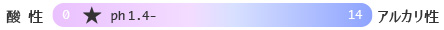
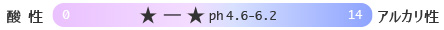
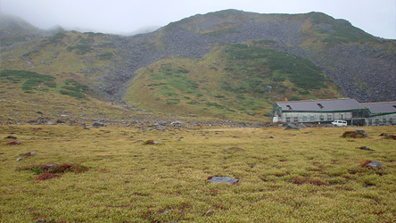
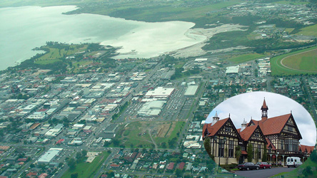
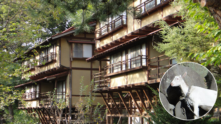

注※ランキングは火山学者Yの個人的なセレクトによるものです。
火山の見地からのため、火山性温泉が多くなっています。
強烈温泉ランキング
-
 No.1 新湯（鹿児島県）
No.1 新湯（鹿児島県）
- 単純硫黄泉（硫化水素型）（pH3.2）
- 秘湯西の大関で硫黄を満喫。強烈な硫化水素臭と青白色の湯
-
秘湯番付の西の大関、「新湯」は霧島の山中、標高900mの一軒宿で、古くから皮膚病に効く湯治場としても有名です。国民宿舎の建物を外から見ると、なんとカーテンも硫黄色で、気分が盛り上がります。入浴用の湯は火山性の水蒸気ガス造成泉とのことですが、建物わきの渓流では温泉の自然湧出が確認できます。強烈な硫化水素型の単純硫黄泉で、入浴後もしばらく硫黄の匂いを満喫できます。広々とした混浴の露天風呂では、晴れた日にはキラキラとまぶしい青白色の湯を堪能できます。
この新湯は火山地形の宝庫のような霧島の大浪池の火山体の斜面にあります。わずか2.5km先には新燃岳があり、付近の硫気地帯からよく見えます。ジェームスボンドで有名な映画「007」にも登場した新燃岳の火口は、2011年に噴出した溶岩が埋めています。日本では西ノ島に次いで新しい、できたての溶岩に思いを馳せながら湯につかるのもおすすめです。
-
No.2 那須湯本温泉（栃木県）
- 含硫黄-カルシウム-硫酸塩・塩化物泉（pH2.2）
- 驚愕のかぶり湯と温度別の湯、硫黄の谷？
-

那須湯本温泉の共同湯は、殺生石で有名な賽の河原の硫気地帯から始まる谷間にあります。かぶり湯や打たせ湯の浴槽や、 41、42、43、44、46、48度の浴槽があり、高温の湯に挑戦することもできます。鹿の湯通り（民宿街）のぶらり散策もおすすめです。硫黄の匂いが立ち込めた谷には民宿や共同湯があり、茶臼岳登山の拠点にもできます。
民宿では温泉玉子が出されることもあり、気分が盛り上がります。入浴後数日間は体についた硫黄の匂いとポカポカ感が続くここの湯は、かつて殺生石で句を残した松尾芭蕉も楽しんだのではないでしょうか。
-
No.3 万座温泉（群馬県）
- 酸性-含硫黄-ナトリウム-硫酸塩・塩化物泉（pH1.8-2.5）
- 高原の青空と乳白色の湯のコントラスト
-
上信越国立公園内にある万座温泉（標高1800m）は高原の温泉地です。周囲の白っぽい山肌は、火山ガスがにじみ出ている証拠です。南方の火山ルートから訪れて最初に目に入る噴気孔“空吹き”では、火山地帯であることを実感できます。
万座の湯は地表から湧き出す自然湧出で、湧出量が豊富です。湯気を立てる青白色の源泉「湯畑」付近は湯治場の風情もあります。温泉宿にはそれぞれ趣のある露天風呂があり、高原の景色や空気の中、至福の時間を過ごせます。硫黄濃度の高い乳白色の濁り湯は最高の贅沢で、大自然の中の転地療養効果も抜群な温泉地といえます。
-
No.4 玉川温泉（秋田県）
- 酸性‐含二酸化炭素-鉄（II)・アルミニウム-塩化物泉 （pH1.2）
- 強酸性の温泉と噴気地帯でのワイルドすぎる岩盤浴
-
全国から湯治客が集結する玉川温泉は、秋田焼山火山の西側にあります。大噴の温度98度の源泉に金物を一晩浸すとボロボロになるというほどの強酸性で、温泉は源泉100％、50％などとわけられています。また国内での岩盤浴発祥の地といわれ、噴気地帯の岩盤の上に直接ゴザをしくワイルドなスタイルに驚かされます。写真手前にはテント小屋も見えます。
-
No.5 草津温泉（群馬県）
- 酸性・含硫黄-アルミニウム-硫酸塩・塩化物泉（pH2.1）
- 温泉番付で最高位の東の大関。自然湧出量は日本一
-


映画テルマエ・ロマエにも登場した草津温泉の中心地「湯畑」では、まず共同湯の入り口にある白旗源泉で、温泉の湧出を確かめることができます。湯畑末端の湯滝には強酸性・高温の温泉中でも生きる単細胞藻類などが分布していて青緑色になっています。湯をかきまぜる「湯もみ」は濃度を変えずに温度を下げる独特の方法で、現在も湯もみショーで見たり体験することができます。
湯畑以外にも、近くの西の河原公園をのんびりと散策すれば、開放感たっぷりの広大な露天風呂に到着します。高温で強酸性(pH1.5)の草津の湯は、一年中、体をしっかりと温めてくれます。温泉熱を利用した草津熱帯園や草津町図書館内の温泉資料など、見どころがあふれる温泉地です。
-
No.6 仙石原温泉（神奈川県）
- 含酸性-カルシウム-マグネシウム-硫酸塩・塩化物泉（pH2.9）
- 黒玉子でも有名な大涌谷で作られる温泉
-
箱根火山の硫気地帯で最も規模が大きいのが大涌谷です。大涌谷は3000年ほど前の神山での水蒸気爆発の火口跡で、2015年春の活発化も記憶に新しいところです。
大涌谷の玉子茶屋前の沸騰状態の熱水溜まりは自然湧出泉源です。ここに卵を一時間ほど浸すと、硫化水素と鉄分が反応して硫化鉄(FeS)となって、卵の殻に結びついて「黒タマゴ」になります。この火山と温泉の恵みを目当てに大勢の外国人観光客が集まるのも納得できます（写真：2015年4月撮影）。
大涌谷では、古くから火山性蒸気を利用した温泉の造成がされていて、多くの温泉施設に供給されています。箱根の温泉の泉質は場所により様々ですが、仙石原では日帰りでも白濁の湯を堪能できます。
-
No.7 別府温泉（大分県）
- 酸性-アルミニウム-硫酸塩泉（硫化水素型）など（pH2.8~）
- 湯けむりといえば別府
-

火山性の熱源、豊富な地下水を湛える扇状地、温泉の通り道である断層の条件が整った別府には、断層に沿って泉質の異なる温泉エリアがいくつもあることをブラタモリ＃63で学びました。確かにあれほどの湯けむりの景色はなかなか他では見られません。見どころはつきない別府ですが、延内寺の爆裂火口跡にも驚かされます。泥火山も迫力で、ニュージーランドのロトルアと姉妹都市であるのも納得です。
-
No.8 奥日光湯元温泉（栃木県）
- 含硫黄-カルシウム・ナトリウム-硫酸塩・炭酸水素塩（・塩化物）泉（硫化水素型） （pH6.5）
- これぞ温泉地の源泉の風景
-
日光は見どころ満載の有名な観光地ですが、奥日光まで足をのばすと、湯ノ湖のそばの湯ノ平湿原一帯には、標高1500ｍの高原の温泉地があります。地熱のパワーを感じさせる泉源地帯の光景は独特です。日帰りでも白濁の湯を堪能できる宿がたくさんあります。
-
No.9 登別温泉（北海道）
- 酸性・含硫黄-ナトリウム-硫酸塩泉ほか（pH1.4~）
- 温泉ワンダーランド
-

草津の殺生河原，雲仙，箱根大涌谷など「地獄」の光景はどこも迫力満点ですが，中でも登別は規模が大きく，圧倒されます．すぐそばの温泉街には，いろんな泉質の湯を楽しめる旅館もあり，ワンダーな温泉地といえます．
写真は温泉水が流れる地獄谷の風景です．
-
No.10 雲仙温泉（長崎県）
- 酸性-含硫黄-アルミニウム-硫酸塩泉ほか（pH1.8~5.8）
- 泥水中での噴気活動、坊主地獄も見られる雲仙地獄
-
雲仙普賢岳の噴火は20年以上前のこととなりましたが、島原半島ジオパークは，随所で説明の看板が充実していて，self-guided tourもできますが，雲仙地獄ははずせない見学地点です．
写真のように敷地の庭園を散策者に解放している旅館もあります．雲仙地獄では活発な噴気活動がみられ、特に泥水中での噴気が造り出す坊主地獄の不思議な造形は必見といえます。噴気孔に針状の硫黄の結晶を見つけることもできます。
昭和初期に外国人観光客向けに建てられたクラシックホテルの浴室にはドーム型の天井やステンドグラスなどがあって、洋風な雰囲気の中、硫黄泉に浸かれる珍しい温泉です。
- 4位から10位を見る
個性派温泉ランキング
-
No.1 地獄谷温泉（長野県）
- ナトリウム-カルシウム-硫酸塩・塩化物泉（pH7.0）
- 外国人観光客が集結するスノーモンキーの温泉
-
湯田中・渋温泉郷の東方，徒歩でたどりつく秘境の地獄谷温泉は、野生のニホンザルの入浴がみられることであまりにも有名です。一軒宿のそばの横瀬川には「渋の地獄谷噴泉」と呼ばれる、10mもの高さまで温泉が自噴する噴泉塔（天然記念物）があり、目をひきます。周囲の谷の斜面は猿が走り回り、独特な世界となっています。
「野猿公苑」の猿専用の湯船の周りには雪の多い真冬でも外国人観光客が集結します。ライブカメラの中継では、雪のなか何時間も撮影に熱中する人が見られます。サルの入浴は真冬だけではなく、子ザルがプール代わりにはしゃぐ姿も見られます。また伊豆の熱川では全国でも珍しいワニの温泉飼育がみられます。こうした温泉地では、温泉好きは人間だけではないことを実感させられます。
-
No.2 鰻温泉（鹿児島県）
- 単純温泉・アルカリ性単純温泉（pH5.0-8.6）
- なんと噴火口の中、さっぱり高温湯。"スメ"とは？
-

阿多カルデラの西部に位置する指宿は、火山と地熱、温泉を実感できる、いわばワンダーランドです。わかりやすい火山地形には、開聞岳や池田湖だけでなく鰻池もあります。 鰻池は直径約1.2kmの絶壁に囲まれた噴火口跡です。唯一の傾斜地にある温泉集落では、いたるところで白く噴気が上がっています。
蒸気噴気から温泉を造成している共同浴場は、湯上がりもさっぱりした熱めの湯です。 集落の各家庭では、食材を蒸かすのに天然の蒸気が利用されていて、蒸しかまどは“スメ”と呼ばれています。近づいてみると火山ガスからの昇華物（結晶）が見られます。
鰻温泉の南方には九州電力の山川地熱発電所があり、発電所内の見学もできます。指宿の約半分の世帯の電力をまかなっているということで、地熱のパワーに驚かされます。
-
No.3 有馬温泉（兵庫県）
- 含鉄-ナトリウム-塩化物泉、二酸化炭素泉、放射能泉（pH4.6-6.2）
- 西の大関、とにかく熱い金の湯！歴史的温泉地
-

西の大関、有馬温泉は「日本書紀」にも登場する歴史ある温泉地で、温泉地の風景や、炭酸せんべいなど観光資源も豊かです。
写真は金の湯付近の源泉の一つです。金の湯は鉄分や塩分に富んでいて、とにかく熱いのが特徴です。
炭酸泉の銀の湯付近では，炭酸ガスの湧出風景や、かつて地面から発生するガスで虫や鳥が死んだ地獄跡も見られます。
-
No.4 指宿温泉（鹿児島県）
- ナトリウム-塩化物泉（pH6.0-7.0）
- 80度の湯がわく海岸！砂蒸しは10分以内で
-

砂蒸しは蒸かし湯の一種で、ユニークな入浴法といえます。指宿の海岸の摺ヶ浜では80度もの湯が自然に湧いており、背後の鰻池周辺から高温の温泉が地下水となって運ばれていると考えられています。
江戸時代から行われているという砂蒸しは体験する価値があります。山川の砂むしの例を挙げると、専用の小屋の中で、浅く掘られた砂の上に浴衣のまま寝そべり、係の人に温められた砂をかけてもらいます。この時の砂の重みはなかなか新鮮で、かなりマニアックですが、“火山岩の密度”を体感する瞬間です。温熱効果が高いので10分以内の“入浴”になりますが、じわじわと体の芯から温まります。ここはまさに阿多カルデラの火山の恵みである地熱を体感できる場所です。砂蒸しの後は、食塩泉の温泉も楽しめます。
-
No.5 野沢温泉（長野県）
- 含硫黄-ナトリウム・カルシウム-硫酸塩泉ほか（pH7.9-9.1）
- ゆで釜のある伝統の湯の街の風景
-
野沢温泉は、志賀高原の火山の一つである毛無山のふもとにあり、火山の恵みを実感できる地です。上杉・武田の湯治場でもあった野沢温泉の共同湯「大湯」は江戸時代の趣のある湯屋建築です。曲がりくねった細い坂道が多い温泉街では外湯めぐりや散策が楽しめ、朝市も人気です。
野沢温泉のシンボルでもある「麻釜」泉源地は、90℃近い熱泉の湯池です。住民の台所として、日常的に野沢菜などの野菜や卵を茹でる光景が見られます。
-
No.6 松代温泉（長野県）
- 含鉄‐ナトリウム・カルシウム‐塩化物温泉（pH6.4）
- 鉄分たっぷりの信州の湯
-
鉄分が濃厚な赤褐色の濁り湯を湛えた湯船の周りには分厚い析出物が見られます。ケンザンの上を歩くような析出物もあり、時々そぎ落としているようです。驚くべき鉄分の多さです。
-
No.7 蔵王温泉（山形県）
- 含硫黄-アルミニウム-硫酸塩泉（pH1.3-1.5）
- 美しい火口湖が知られる蔵王火山の麓の強酸性の湯
-

スキーをはいて有名な樹氷モンスターの光景を堪能した後には，蔵王の湯で 体を温めるのがおすすめです。けれども透明でピリピリ感のある強酸性の湯は目に入るとしばらく開けられないほど強烈なので、注意が必要なほどです。
-
No.8 高峰温泉（長野県）
- 含硫黄‐ナトリウム・マグネシウム・カルシウム‐炭酸水素塩温（pH6.6）
- 標高2,000mの絶景の野天風呂
-
登山，スキー，星空や野鳥，高原植物の観察などいろいろ楽しむことができる高峰高原．
高峰温泉は、烏帽子・浅間火山群の真っただ中にあります。日帰り利用もできるランプの湯では、やや温度の低めの源泉も楽しめます。かすかに硫黄の匂いのする湯はよく温まります。特筆すべきは、宿泊者限定の野天風呂で、目の前に絶景が広がります。
写真の後方には池の平湿原のある火山体が見えますが、ここは現在の浅間山の火口のような噴火口跡が湿原となっているのです。10万年以上も前の火山活動を想像しながら野天湯に浸かるというのも面白いかもしれません。
-
No.9 熱川温泉（静岡県）
- 塩化物泉（pH8.1-8.7）
- 全国でも珍しいワニの温泉飼育（伊豆熱川）
-
気持ちよさそうにプカプカと温泉に浸っているワニを見ると，おとなしい動物なのではないかと錯覚しそうになります．湯のよさは，このワニ達が証明しているといえそうです（もちろんこの湯船には人は入れませんが）．
ここでは熱帯植物の栽培にも温泉が利用されていて，温室できれいな植物をたくさん見ることもできます．
-
No.10 川原湯温泉（群馬県）
- 含ナトリウム塩化物-カルシウム硫酸塩泉（硫化水素型）（pH7.2）
- 高台移転をした、ダムに沈みゆく思い出の温泉地
-
昭和の雰囲気を残す温泉街にあった共同湯．とにかく熱い湯でした．
熱すぎる時は，水の出るホースを持って入るのだと地元の方に教えられた記憶があります．
- 4位から10位を見る
秘湯温泉ランキング
-
祖母谷（ばばだに）温泉（富山県）
- 単純硫黄泉（pH8.1）
- トロッコ電車と徒歩でたどりつくワイルドな湯
-

祖母谷温泉（ばばだに）は、宇奈月からトロッコ列車にゆられ、さらに徒歩でたどり着く黒部峡谷の温泉です。V字型の谷底の河原から湯気が立ち上る光景は、なかなかワイルドです。「河原での入浴は危険なため、近くの施設を利用してください」との注意の看板があります。
-
那須・北温泉（栃木県）
- 単純硫黄泉（pH6.2）
- 強烈な湯がたっぷり
-
テルマエ・ロマエにも登場した独特の風情の北温泉。ここの湯はぐったりするほど強烈です。露天風呂のすぐ横に“湯の川”が流れています。
-
みくりが池温泉（富山県）
- 単純硫黄泉（硫化水素型）（pH3.1）
- 日本一高所（標高2430m）の温泉施設
-

室堂を訪れたら立ち寄りたくなる白濁の湯です。雷鳥に会えなかったとしても、この風景と温泉でリフレッシュできること間違いなしです。
-
Hell‘s Gate温泉（ニュージーランド
）
- 単純硫黄泉（硫化水素型）＊推定（pH1-2）
- 広大な噴気地帯散策の後は白濁の湯船へ
-
その名も恐ろしいヘルズゲイト「地獄の門」はロトルアの北東方向にあります。空から見ると一大噴気地帯であることがわかります。散策路では水蒸気爆発の跡と思われる湯の湖や泥火山が点在する硫気地帯の中を巡ることができます。水着着用の白濁の湯船の周りには、温泉入浴をする人々を見物する観光客もました。泥湯（有料）の湯船もあり、とても充実した温泉施設です。ニュージーランドの人々の温泉好きが伝わってきます。ロトルアカルデラの火山の恵みをたっぷり楽しめるので、立ち寄りたい場所です。
- もっと見る
番外編温泉ランキング
-
星野温泉（長野県）
- ナトリウム‐炭酸水素塩・塩化物温泉（pH7.5）
- あたたまる度No.1
-

明治時代の草津帰りの人々の「草津の上り湯」は、まろやかな湯でポカポカ感が持続します。緑色の溶結凝灰岩の床や、カコウ岩の岩風呂など石材ウォッチングもできます。人気スポットで、混雑するときもありますが、脱衣所では静かにジャズが流れています。
-
マグマ温泉（鹿児島県）
- ナトリウム-塩化物泉（pH6.6）
- 噴火を見ながら足湯⁉
-
桜島での火山の地質調査の帰りに、地元の人々に混じって楽しむのが、ネーミングも強烈な「マグマ温泉」です。桜島では時々同業の火山研究者の方に遭遇することもありますが、かつてマグマ温泉の近くにあった国民宿舎「さくらじま荘」のオレンジ色のタオルを懐かしく思う方も多いと思われます。
桜島港付近の温泉は海岸に近く、ナトリウム-塩化物泉です.鉄分も多く、黄褐色の濁り湯です。タオルも染めてしまうほどの濁り湯は、信州の松代や、浅間山・天狗温泉などを彷彿とさせます。桜島フェリーを眺めながら熱めの温泉を堪能できますが、３kmの距離の先には、鹿児島の60万都市があり、都市のそばの活火山にいることを実感します。
マグマ温泉は、およそ100年前の大正噴火の時に溶岩が海を埋め立ててできた溶岩原の上にあります。この南東約9㎞のあたりでは、かつての有村温泉が大正噴火の溶岩に埋没しています。桜島には昭和溶岩を噴出した1946年の頃には一時的に出現した幻の温泉もあるそうです。桜島ミュージアムでは、古里海岸の砂を掘って足湯を作るツアーが好評とのことです。一般のガイド本ではあまり紹介されませんが、桜島の温泉は穴場といえそうです。
-
ロトルア温泉（ニュージーランド）
- 詳細不明（pH＊）
- 時々庭先で自噴もする湯の街
-

海外の温泉事情の例を紹介したいと思います。ニュージーランド北島は日本と同じように火山や地熱活動が活発です。かつて大規模噴火を起こしたロトルアカルデラの湖畔の温かい地熱地帯には、マオリ族も住み着いて、野菜などを埋めて地熱で蒸かしていました（ハンギ料理）。
別府と姉妹都市でもある温泉の街ロトルアでは、街のすぐ下を温泉水が流れているため、街角でも硫黄の匂いが漂うのに驚かされます。民家の庭先で自噴することもあるそうです。立派な温泉施設がある他、温泉に入れる民宿もあります。ロトルア博物館は、1908年に建てられたバスハウス内に併設されています。英国の雰囲気の建物の地階では、当時の温泉保養所の泥風呂跡の見学ができます。ロトルア博物館は ロトルア湖の湖岸にありますが，付近の湖水が温泉成分で白くなっています（空撮写真）．
-
中棚温泉（長野県）
- アルカリ性単純温泉（pH8.6）
- ヤギがお出迎えするレトロな宿の，つるつる美人湯
-

中棚温泉は千曲川を見下ろす河岸段丘の崖にあり，湯上がりに風に吹かれるのも気持ちよいところです。つるつる感のあるアルカリ性の湯で、りんご湯が楽しめるときもあります。島崎藤村が逗留したという風情ある宿で、玄関前ではなんとヤギが出迎えてくれます。信州そばを堪能したり、手入れされた庭を散策するのもよしです。
- もっと見る
主な参考文献
- 日本温泉科学会 西村進編(2004)温泉科学の最前線- .ナカニシヤ出版,pp.236.
- 日本温泉科学会編(2005)温泉学入門-温泉への誘い- .コロナ社,pp.128.
- 日本温泉地域学会編(2008)日本温泉地域資産,pp.80.
- 大沢信二・西村進編(2016)温泉と地球科学: 温泉を通して読み解く地球の営み - .ナカニシヤ出版,pp.193.
- 佐々木信行(2013)温泉の科学.SBクリエイティブ,pp.238.
- 白水晴雄(1994)温泉のはなし. 技報堂出版, pp.201.
 Department of Geosystem Sciences, College of Humanities and Sciences, Nihon University
3-25-40, Sakurajosui, Setagaya-ku, Tokyo 156-8550 Japan
Department of Geosystem Sciences, College of Humanities and Sciences, Nihon University
3-25-40, Sakurajosui, Setagaya-ku, Tokyo 156-8550 Japan